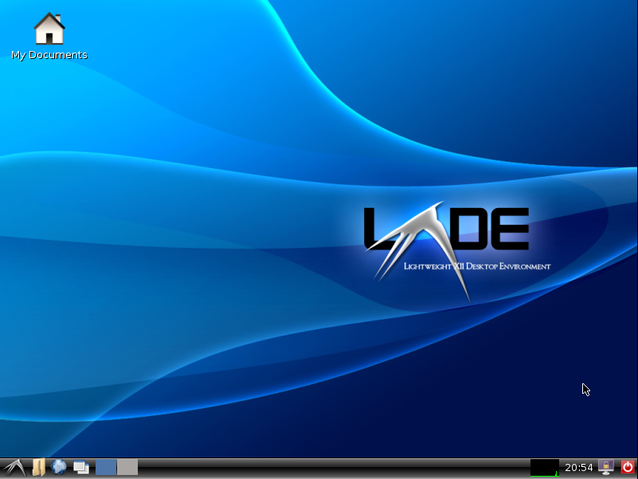

DEBIAN

Debian GNU/Linux es un sistema operativo libre, desarrollado por
miles de voluntarios de todo el mundo, que colaboran a través de
Internet. La dedicación de Debian al software libre, su base de
voluntarios, su naturaleza no comercial y su modelo de desarrollo
abierto la distingue de otras distribuciones del sistema operativo
GNU. Todos estos aspectos y más se recogen en el llamado Contrato
Social de Debian. Debian se caracteriza por no tener las últimas
novedades en GNU/Linux, pero sí tener el sistema operativo más
estable posible. Esto se logra por medio de paquetes y librerías
antiguas pero con muchos meses de pruebas, asegurando la máxima
estabilidad por cada versión que es lanzada por la comunidad de
Debian. Nació en el año 1993, de la mano del proyecto Debian, con
la idea de crear un sistema GNU usando Linux como núcleo. El
proyecto Debian es la organización responsable de su mantenimiento
en la actualidad, y también desarrolla sistemas GNU basados en
otros núcleos
Detalles
- Desarrollador: The Debian Project
- Ultima Version: 11.2 (Bullseye)
- Escritorio Predeterminado: GNOME Desktop
- Administrador de Paquetes: APT
- Sitio Web Oficial: Debian.org
Escritorios

(Debian Gnome Desktop)
(Debian XFCE Desktop)

(Debia LXDE Desktop)
(Debian i3 Window Tiling Manager)
(Debian Bspwm)
(Debian KDE Plasma)